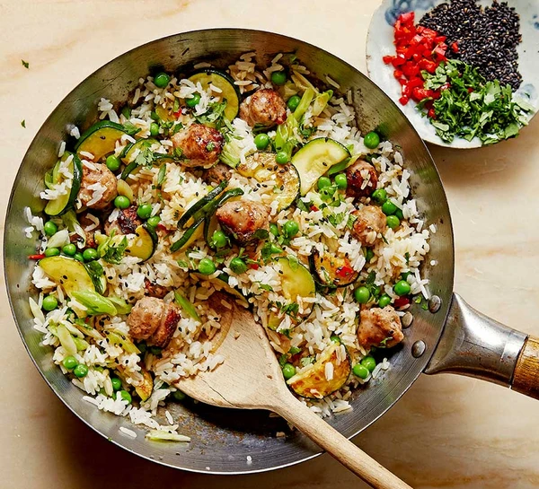
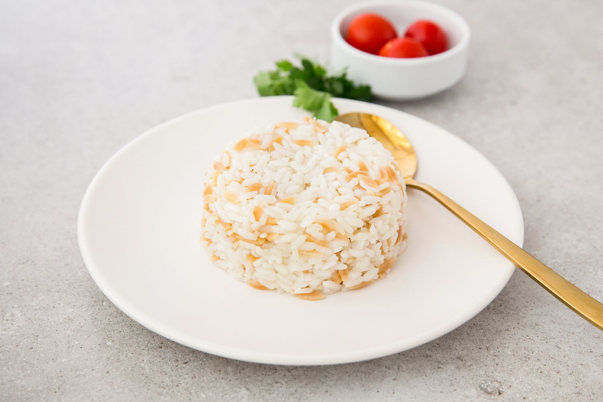
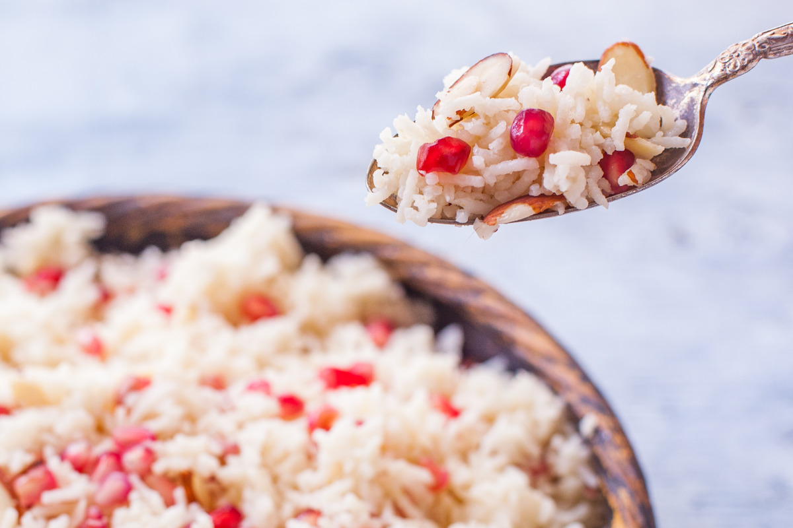

Chicken, Corn and Saffron Rice Recipe
Roll up your sleeves to learn how to make rice with chicken, corn and saffron. Follow the chicken, corn and
saffron rice recipe step by step.
-
Preparation time
- Total: Approximately 30 minutes
- Preparation: 40 minutes
- Cooking: 30 minutes
-
Ingredients
- 500 grams of rice
- 500 ml hot water
- Chicken juice
- 45 ml margarine
- 400 gram chicken
- 200 gr corn
- 200 gr red papper
- 500 gr spinach
- 1 lemon
- 20 gr parsley
- 15 gr garlic
- black pepper
- hot pepper
-
Instructions
-
Soak the rice in warm water for half an hour. The juice of half a lemon you put in it will prevent the rice
from darkening while it soaks and will keep your rice white.
-
Put 1 spoon of Becel Olive Oil Liquid Margarine in the pot, add the Chinese cut onions, cook until they
soften slightly and turn pink, add the garlic.
- Throw half of the chicken into the pot and fry until lightly browned.
- Remove from the pot, place on another plate and cover.
- Add corn and red peppers and continue cooking. When the vegetables release their
water, add 2 tablets of Knorr Chicken Bouillon and black pepper to the pot and stir.
-
Soak the saffron in warm water and let it give its color to the water.
After draining the rice, add it to the pot and add lemon juice.
Add the remaining chicken and fry over high heat for 2 minutes.
- Add corn and red peppers and continue cooking. When the vegetables release their
water, add 2 tablets of Knorr Chicken Bouillon and black pepper to the pot and stir.
- Add the saffron colored water.
Add hot water, cover the pot and cook for 10 minutes on low heat.
Turn off the heat and let it rest for 5 minutes, then add parsley and dill.
Nutrition
The table below shows nutritional values per serving without the additional fillings.
Calories
|
277kcal
|
Carbs
|
0g
|
Protein
|
20g
|
Fat
|
22g
|

Sausage & soy fried rice
Enjoy this speedy veg-packed fakeaway. We’ve gone for courgettes and peas here to accompany the sausage and rice,
but use whatever veg you have
-
Preparation time
- Total: Approximately 30 minutes
- Preparation: 15 minutes
- Cooking: 30 minutes
-
Ingredients
- 1 tbsp vegetable oil
- 4 spring onions, finely sliced
- ½-1 red chilli, finely chopped
- 3 garlic cloves, finely grated
- 10g ginger, peeled and finely grated
- 3 sausages, chopped into bite-sized pieces
- 2 courgettes, sliced into half-moons
- 200g frozen peas
- 750g cooked jasmine rice (either from leftovers or pouches)
- 1 tsp sesame oil
- 10g coriander, chopped (keep any leftover from the pack for the chicken traybake and tofu noodles)
- 1 tbsp black sesame seeds (optional)
-
Instructions
-
Heat the vegetable oil in a large frying pan over a medium-high heat. Cook the spring onions, chilli, garlic and ginger for 3-4 mins until fragrant and starting to turn golden.
-
Add the sausage pieces and cook for 5-6 mins until browned at the edges. Mix in the courgettes and cook for another 7-8 mins, stirring often, until softened and the sausages are cooked through.
- Stir in the peas, rice, soy sauce and sesame oil. Cook for 5 mins more until everything is piping hot. Sprinkle over the coriander and sesame seeds, if using, and serve.
Nutrition
The table below shows nutritional values per serving without the additional fillings.
Calories
|
277kcal
|
Carbs
|
0g
|
Protein
|
20g
|
Fat
|
22g
|

Turkish Pilav (Pilav Recipe)
Turkish pilav, also known as "Pilav" in Turkish cuisine, is a flavorful and versatile rice dish that pairs perfectly with a wide range of main courses. This simple yet delicious recipe will guide you through making the perfect pilav every time.
-
Preparation Time
- Total: Approximately 25 minutes
- Preparation: 10 minutes
- Cooking: 15 minutes
-
Ingredients
- 1 and 1/2 cups (300g) long-grain rice (such as Basmati), rinsed until the water runs clear
- 2 tablespoons unsalted butter or olive oil
- 1 small onion, finely chopped
- 2 and 1/2 cups (600ml) chicken or vegetable broth, hot
- 1 teaspoon salt, or to taste
- 1/2 teaspoon ground black pepper
- Optional: chopped fresh parsley or dill for garnish
-
Instructions
-
In a medium-sized pot or saucepan, melt the butter (or heat the olive oil) over medium heat.
-
Add the finely chopped onion to the pot and sauté until soft and translucent, about 5 minutes.
-
Add the rinsed rice to the pot and stir to coat it with the butter (or olive oil) and onions. Cook for an additional 2-3 minutes, stirring occasionally, until the rice grains are lightly toasted.
-
Pour the hot chicken or vegetable broth into the pot. Season with salt and pepper, and give it a quick stir to combine.
-
Bring the mixture to a boil, then reduce the heat to low. Cover the pot with a tight-fitting lid and simmer for 15 minutes, or until the rice is tender and has absorbed all the liquid.
-
Once the rice is cooked, remove the pot from the heat and let it sit, covered, for 5 minutes. This allows the rice to steam and fluff up.
-
Fluff the pilav with a fork to separate the grains. Garnish with chopped fresh parsley or dill, if desired.
-
Serve the Turkish pilav hot as a delicious side dish alongside your favorite main course. Enjoy!
Turmeric Rice
Turmeric rice is a flavorful and vibrant side dish that pairs well with a variety of main courses. This recipe adds a subtle earthy flavor and a beautiful golden color to your rice.
-
Preparation Time
- Total: Approximately 25 minutes
- Preparation: 5 minutes
- Cooking: 20 minutes
-
Ingredients
- 1 cup (200g) basmati rice, rinsed
- 2 cups (480ml) water or vegetable broth
- 1 tablespoon olive oil or butter
- 1 teaspoon ground turmeric
- 1/2 teaspoon salt, or to taste
- Optional: chopped fresh cilantro or parsley for garnish
-
Instructions
-
In a medium saucepan, heat the olive oil or butter over medium heat.
-
Add the rinsed basmati rice to the saucepan and sauté for 1-2 minutes until lightly toasted.
-
Stir in the ground turmeric and salt, coating the rice evenly.
-
Pour in the water or vegetable broth and bring to a boil.
-
Once boiling, reduce the heat to low, cover, and simmer for 15-20 minutes, or until the rice is tender and the liquid is absorbed.
-
Remove the saucepan from the heat and let it sit, covered, for 5 minutes.
-
Fluff the rice with a fork and garnish with chopped fresh cilantro or parsley, if desired.
-
Serve the turmeric rice hot as a delicious and colorful side dish. Enjoy!

Pomegranate and Almond Pilaf
This pomegranate and almond pilaf is a delightful twist on traditional rice dishes. With sweet pomegranate seeds, crunchy almonds, and aromatic spices, it makes a perfect side dish or a light main course.
-
Preparation time
- Total: Approximately 40 minutes
- Preparation: 10 minutes
- Cooking: 30 minutes
-
Ingredients
- 1 1/2 cups basmati rice
- 2 tablespoons olive oil
- 1 onion, finely chopped
- 2 cloves garlic, minced
- 1 cinnamon stick
- 4 cardamom pods
- 1 bay leaf
- 2 1/2 cups vegetable broth
- 1/2 cup sliced almonds, toasted
- 1/2 cup pomegranate seeds
- 1/4 cup chopped fresh parsley
- Salt and pepper to taste
- 1 tablespoon lemon juice
-
Instructions
-
Rinse the basmati rice under cold water until the water runs clear. Drain well.
-
Heat the olive oil in a large saucepan over medium heat. Add the chopped onion and cook, stirring frequently, until softened, about 5 minutes. Add the minced garlic and cook for another minute.
-
Add the cinnamon stick, cardamom pods, and bay leaf to the pan. Stir in the rinsed rice and cook, stirring, for about 2-3 minutes until the rice is lightly toasted.
-
Pour in the vegetable broth, and bring to a boil. Reduce the heat to low, cover, and simmer for about 15-20 minutes, or until the rice is tender and the liquid is absorbed.
-
Remove the pan from the heat and let it sit, covered, for 5 minutes. Discard the cinnamon stick, cardamom pods, and bay leaf.
-
Fluff the rice with a fork and stir in the toasted almonds, pomegranate seeds, chopped parsley, salt, pepper, and lemon juice.
-
Serve the pilaf warm, garnished with additional pomegranate seeds and parsley if desired.
Nutrition
The table below shows nutritional values per serving.
| Calories |
320 kcal |
| Carbohydrates |
50g |
| Protein |
6g |
| Fat |
10g |